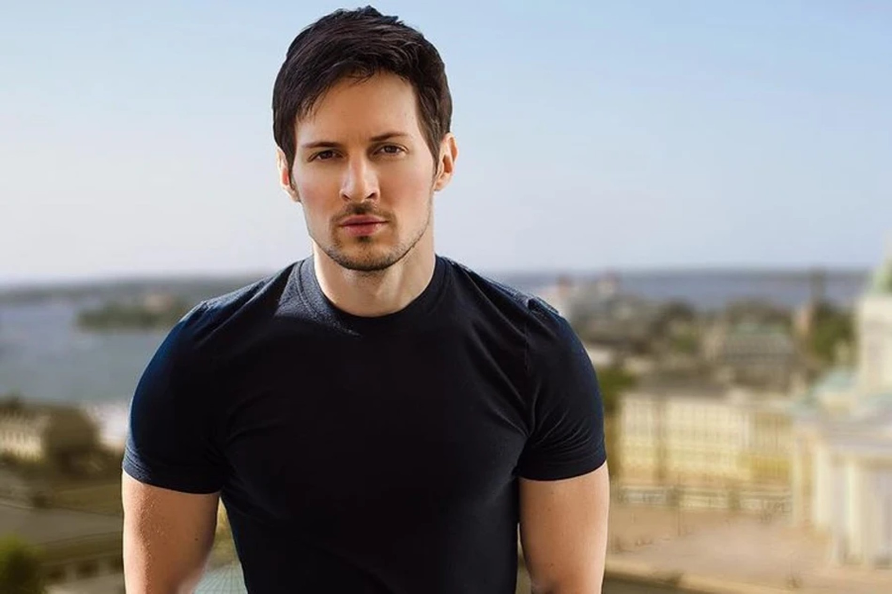

 Павел Дуров известный российский предприниматель и разработчик, создатель популярных мессенджеров Telegram и VKontakte (ВКонтакте). Он родился 10 октября 1984 года в городе Ленинакан (ныне Кировакан, Армения). Павел Дуров совместно с братом Николаем Дуровым основал социальную сеть VKontakte в 2006 году, которая стала одной из самых популярных в России и странах СНГ. Павел Дуров также известен своими принципиальными позициями по вопросам цензуры, защиты частной жизни и свободы интернета.
Павел Дуров – выдающийся российский предприниматель и разработчик, чей путь к успеху полон ярких историй. История успеха Павла Дурова начинается с основания социальной сети ВКонтакте в 2006 году вместе со своим братом Николаем Дуровым. ВКонтакте стала одной из самых популярных платформ связи в России и странах СНГ, обретя миллионы пользователей благодаря своей простоте и доступности. Павел Дуров быстро стал иконой интернет-индустрии в России и за её пределами благодаря своему таланту и амбициям. Несмотря на различные препятствия включая конфликты с властями и уход из России, Дуров смог реализовать множество инноваций и создать продукты, которые завоевали мировую популярность. Параллельно с работой над ВКонтакте, Павел Дуров запустил мессенджер Telegram в 2013 году. Telegram быстро стал одним из самых популярных мессенджеров в мире благодаря своей шифрованной и безопасной платформе, что стало важным фактором во времена повышенного внимания к защите конфиденциальности данных. История успеха Павла Дурова также связана с его принципиальностью, страстью к свободе слова и противостоянием цензуре и контролю со стороны государства. Его открытость, стойкость и верность принципам принесли ему много почитателей и последователей по всему миру. Павел Дуров остается одной из самых влиятельных фигур в мире технологий и интернета, продолжая вести свои принципиальные борьбы и создавая продукты, которые изменяют мир к лучшему.
Сайт разработал:© Морев Никита